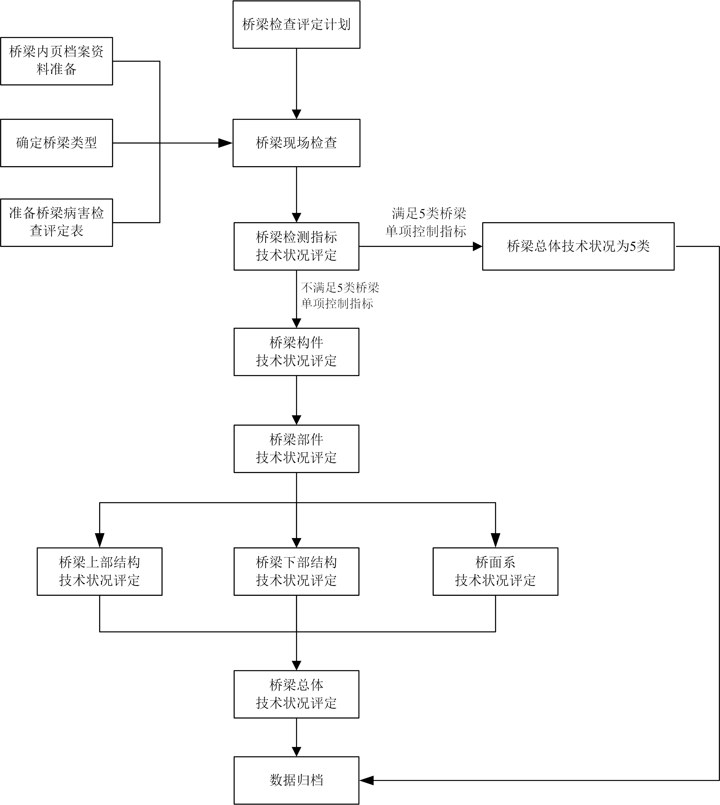

3 评定方法及等级分类
3 评定方法及等级分类
3.1 桥梁技术状况评定方法
3.1.1 公路桥梁技术状况评定包括桥梁构件、部件、桥面系、上部结构、下部结构和全桥评定。公路桥梁技术状况评定应采用分层综合评定与5类桥梁单项控制指标相结合的方法，先对桥梁各构件进行评定，然后对桥梁各部件进行评定，再对桥面系、上部结构和下部结构分别进行评定，最后进行桥梁总体技术状况的评定、桥梁检查评定记录表可按附录A的要求执行。评定指标如图3.1.1所示。
图 3.1.1 桥梁技术状况评定指标

3.1.2 当单个桥梁存在不同结构形式时，可根据结构形式的分布情况划分评定单元，分别对各评定单元进行桥梁技术状况的等级评定。
3.2 桥梁技术状况等级分类
3.2.1 桥梁部件分为主要部件和次要部件。
3.2.2 各结构类型桥梁主要部件见表3.2.2，其他部件为次要部件。
| 序号 | 结构类型 | 主要部件 |
| 1 | 梁式桥 | 上部承重构件、桥墩、前台、基础、支座 |
| 2 | 板拱桥（圬工、混凝土）、肋拱桥、箱形拱桥、双曲拱桥 | 主拱圈、拱上结构、桥面板、桥墩、桥台、基础 |
| 3 | 刚架拱桥、桁架拱桥 | 刚架（桁架）拱片、横向连接系、桥面板、桥墩、桥台、基础 |
| 4 | 钢—混凝土组合拱桥 | 拱肋、横向连接系、立柱、吊杆、系杆、行车道板（梁）、支座 |
| 5 | 悬索桥 | 主缆、吊索、加劲梁、索塔、锚碇、桥墩、桥台、基础、支座 |
| 6 | 斜拉桥 | 斜拉索（包括锚具）、主梁、索塔、桥墩、桥台、基础、支座 |
3.2.3 桥梁总体技术状况评定等级分为1类、2类、3类、4类、5类，见表3.2.3。
| 技术状况 评定等级 |
桥梁技术状况描述 |
| 1类 | 全新状态、功能良好 |
| 2类 | 有轻微缺损、对桥梁使用功能无影响 |
| 3类 | 有中等缺损、尚能维持正常使用功能 |
| 4类 | 主要构件有大的缺损，严重影响桥梁使用功能；或影响承载能力，不能保证正常使用 |
| 5类 | 主要构件存在严重缺损，不能正常使用，危机桥梁安全，桥梁处于危险状态 |
3.2.4 桥梁主要部件技术状况评定标度分为1类、2类、3类、4类、5类，见表3.2.4。
| 技术状况 评定等级 |
桥梁技术状况描述 |
| 1类 | 全新状态、功能完好 |
| 2类 | 功能良好，材料有局部轻度缺损或污染 |
| 3类 | 材料有中等缺损；或出现轻度功能性病害，但发展缓慢，尚能维持正常使用功能 |
| 4类 | 材料有严重缺损，或出现中等功能型病害，且发展较快；结构变形小于或等于规范值，功能明显降低 |
| 5类 | 材料有严重缺损，出现严重的功能性病害，且有继续扩展现象；关键部位的部分材料强度达到极限，变形大于规范值，结构的强度、刚度、稳定性不能达到安全通行的要求 |
3.2.5 桥梁次要部件技术状况评定标度分为1类、2类、3类、4类，见表3.2.5。
| 技术状况 评定等级 |
桥梁技术状况描述 |
| 1类 | 全新状态、功能完好；或功能良好，材料有轻度缺损、污染等 |
| 2类 | 有中等缺损或污染 |
| 3类 | 材料有严重缺损，出现功能降低；进一步恶化将不利于主要部件，影响正常交通 |
| 4类 | 材料有严重缺损，失去应有功能，严重影响正常交通；或原无设置，而调查需要补设 |
3.2 桥梁技术状况评定工作流程
图 3.3.1 桥梁技术状况评定工作流程图